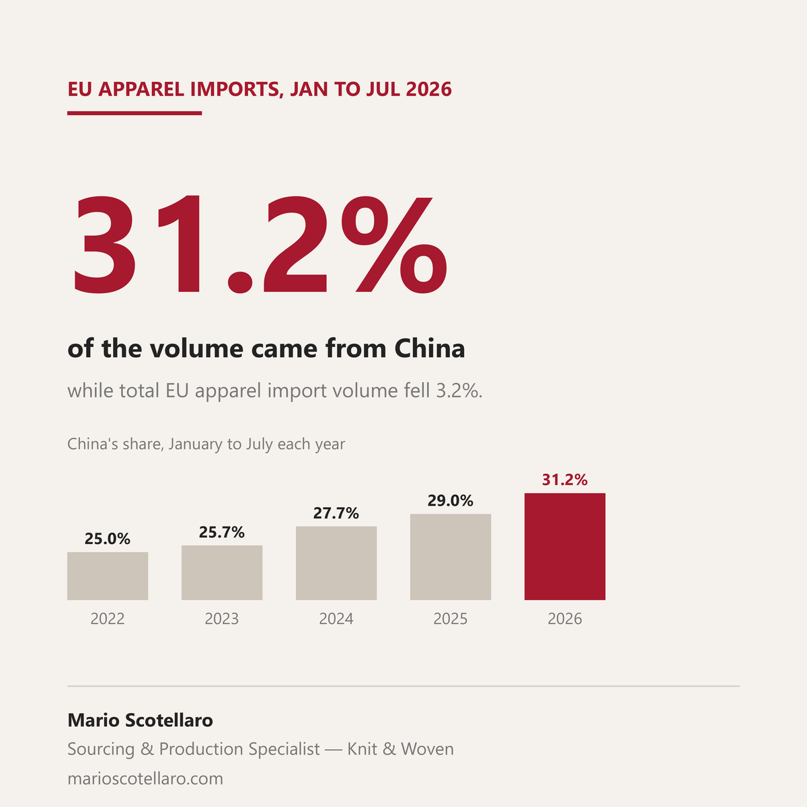

Europe is importing less clothing this year, and China is shipping a larger share of it.
Eurostat data for January to July 2026 (last updated 15 September) show EU apparel imports from outside the bloc down 3.2% in volume compared with the same months of 2025. China went the other way, up 4.2%, and now accounts for 31.2% of the tonnes the EU brings in, against 29.0% a year earlier.
This is not a single year effect. Comparing the same seven months each year, China's share of EU apparel import volume went from 25.0% in 2022 to 25.7% in 2023, 27.7% in 2024, 29.0% in 2025 and 31.2% this year. Over the same window Bangladesh, the other large supplier, eased from 31.0% to 28.9%.
Most South Asian bases are shipping less to Europe so far in 2026: Bangladesh down 5.7% in volume, India down 10.7%, Sri Lanka down 12.4%. Pakistan is the exception, up 3.4%. Turkey is down 14.6% in volume, while the dollar value of each kilo it ships rose about 7%: less product, at a higher price. Its exporters' association İHKİB reports apparel exports to the EU down 6.1% for January to September.
One caution when reading headlines on this. Measured in euros, EU apparel imports are about 5% lower. Converted month by month into dollars, the currency most factories invoice in, spending is flat, because the euro averaged 5.4% stronger against the dollar than a year earlier. Volume is the cleaner signal, and volume says European demand is slightly softer while China takes a bigger slice of it.
Sources: Eurostat Comext, dataset DS-045409, HS chapters 61 and 62, extracted 12 October 2026 (2026 months provisional) · European Central Bank, euro to dollar reference rates, monthly averages · İHKİB, apparel sector status report, January to September 2026, published 5 October 2026